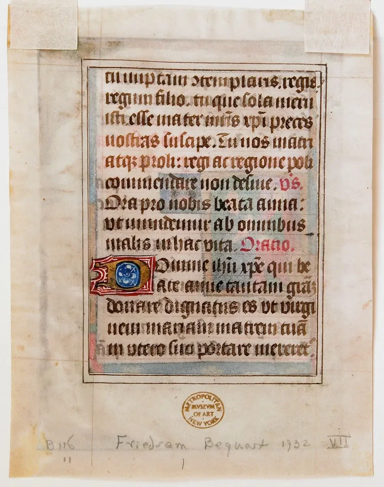
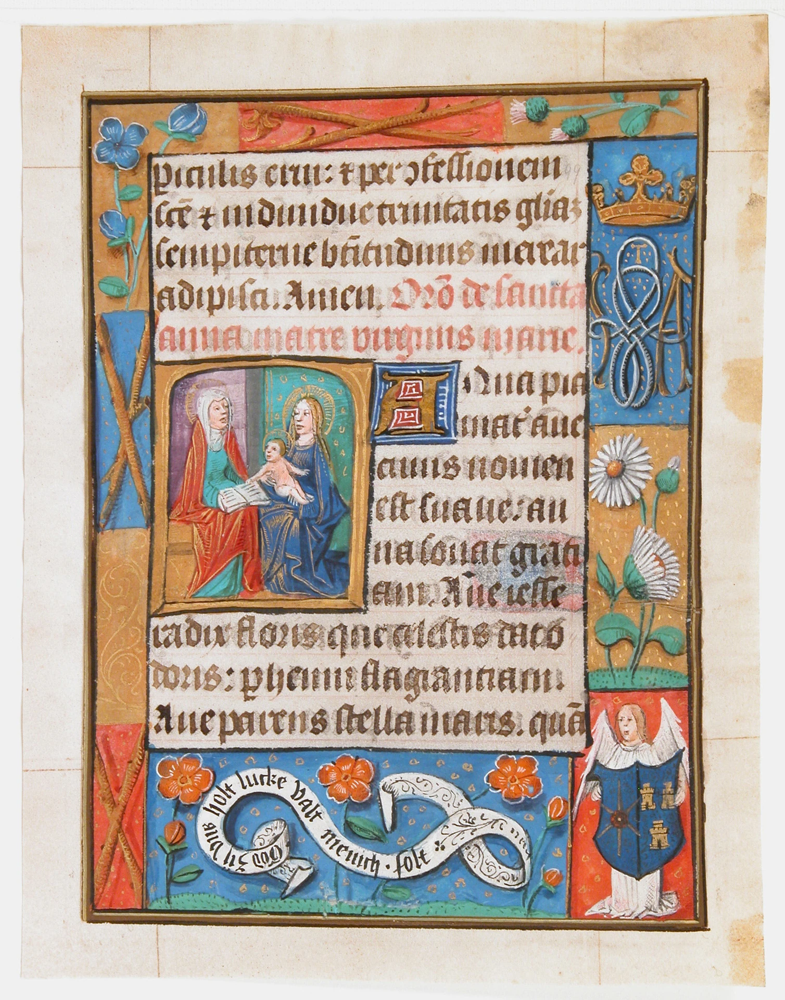
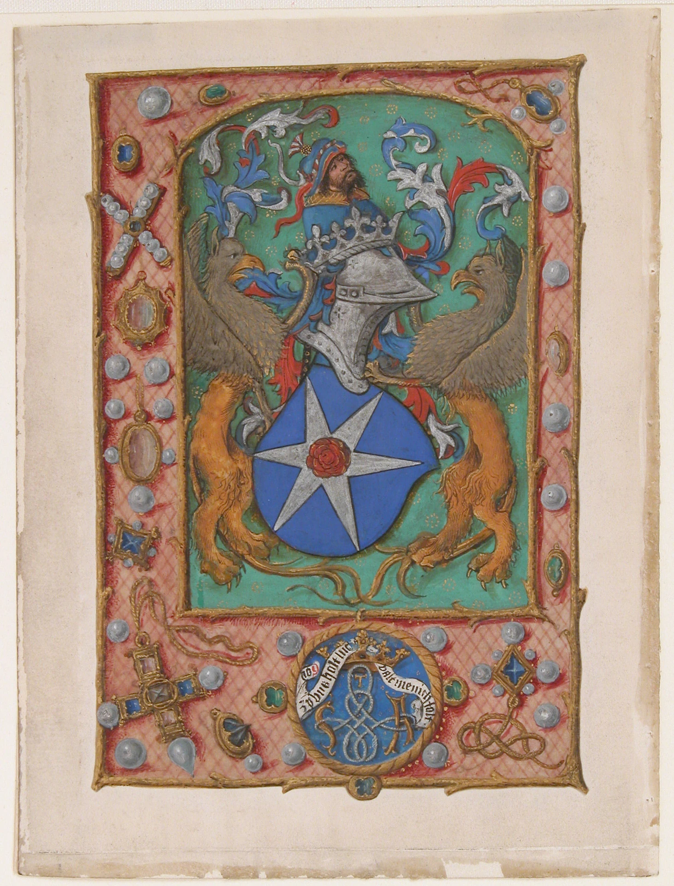
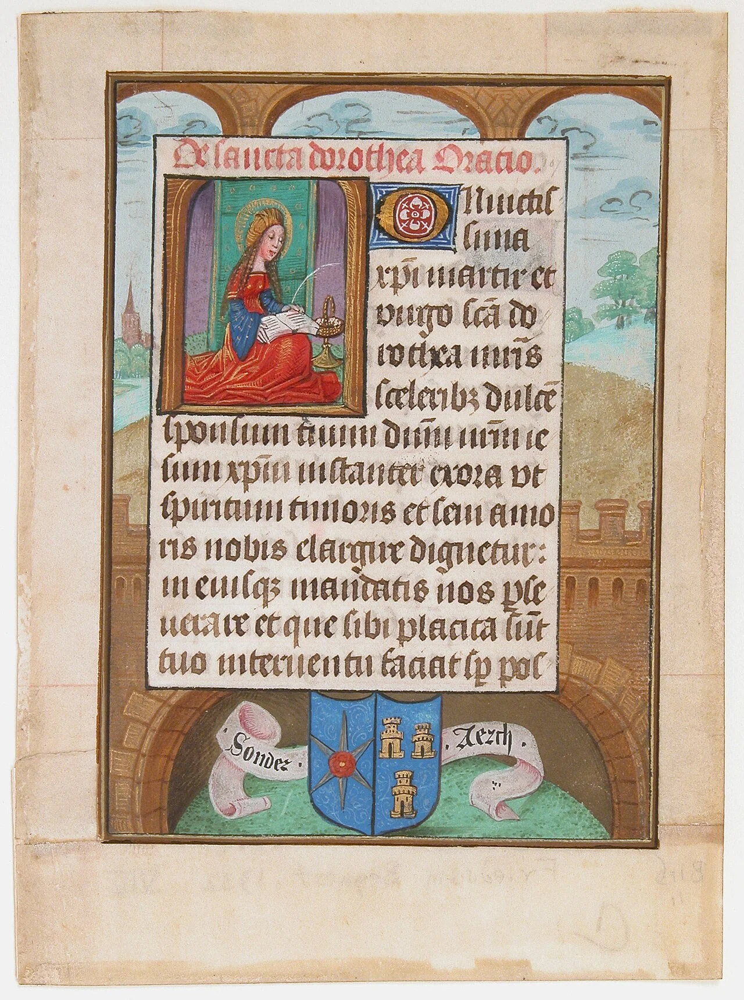
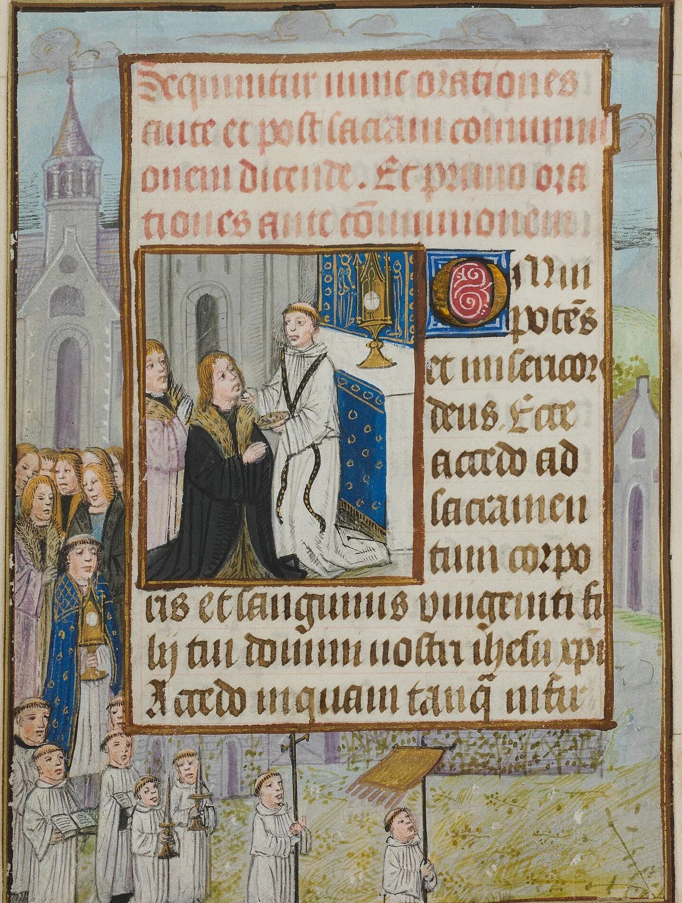
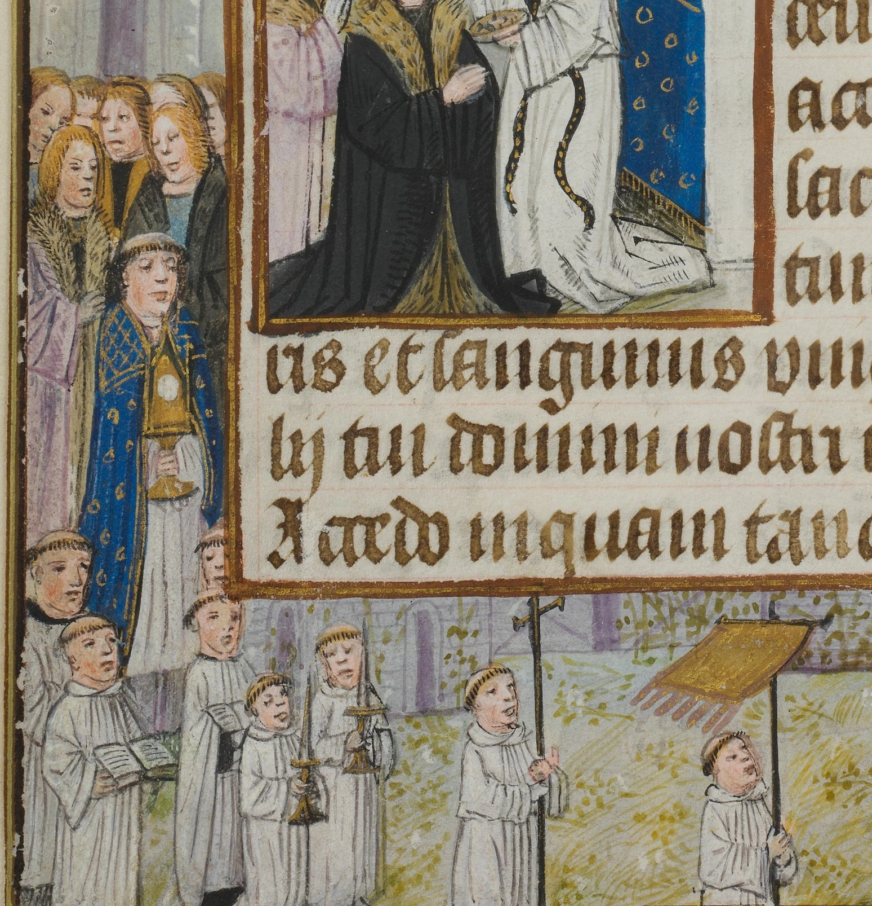

아직 펼치지 않은 카드손으로 그린 말씀 · 6중세 기도서 낱장중세 사람들은 하루에도 여러 번 기도하려고 작은 기도서를 곁에 두었어요. 그 책에서 떨어져 나온 한 장은 지금 어떻게 팔리고 있을까요?500년 전 사람이 들고 기도하던 책의 한 장이래!
1500년 무렵네덜란드 지방 겐트·브뤼허 · 지금은 미국 메트로폴리탄 미술관
중세 기도서 낱장
1500년 무렵 겐트·브뤼허에서 만든 이 기도서는 지금 한 권이 아니라 낱장으로 남아 있어요. 그 가운데 영성체 기도가 시작되는 쪽에는, 이 책의 주인으로 보이는 사람이 성체를 받는 모습과 행렬을 따라 걷는 모습으로 두 번 그려져 있어요. 그 쪽을 펼쳐 그 사람을 찾아보세요.
옛날 기도책에 책 주인 아저씨가 그려져 있대. 그것도 두 번이나! 같이 찾아볼까?
검수 전 시안이에요(기준서 1판). 장면에는 기록에 있는 것만 옮겼고, 상상은 ‘눈 감고 상상해 보기’에만 썼어요.
시안 확인용카드 단계 미리 보기
1
낱장의 다른 쪽
앞면 카드에서 본 그 낱장을 뒤집으면 이런 쪽이 나와요. 1500년 무렵 네덜란드 지방의 겐트·브뤼허에서 만든 기도서의 한 장이에요(메트로폴리탄 미술관). 겐트와 브뤼허는 지금의 벨기에에 있는 도시예요.
작은 그림에서는 나이 든 여인이 책을 펼쳐 앉아 있고, 곁에서 젊은 여인이 아기를 안고 있어요. 앞면에서 본 성 안나 기도가 이 그림과 함께 시작돼요. 안나는 성모 마리아의 어머니예요.
테두리에는 꽃과 왕관, 글자를 엮은 무늬가 있고, 오른쪽 아래에서는 천사가 방패를 들고 있어요. 그 옆 흰 띠에는 짧은 글이 적혀 있어요.

이 기도서는 지금 한 권이 아니에요. 메트로폴리탄 미술관에는 이 장과 함께 들어온 낱장들이 같은 번호 32.100.475 뒤에 a, c, f, g 같은 글자를 붙여 남아 있어요. 모두 1931년 마이클 프리드샘이 남긴 유증으로 들어왔어요(메트로폴리탄 미술관).
앞면 카드의 낱장을 뒤집으면 그림이 나와. 안나 할머니가 책을 읽고 계셔.
물어보기오른쪽 아래 천사는 무엇을 들고 있을까?
2
쪽 전체를 채운 문장
함께 남은 낱장 가운데 한 장은 쪽 전체가 문장이에요. 문장은 집안마다 정해 쓰던 그림 표지예요.
파란 방패에 붉은 꽃을 품은 은빛 별이 있고, 그 위에 왕관 두른 투구와 수염 난 사람 머리 장식이 올라 있어요. 양옆에서는 그리핀 둘이 방패를 받쳐요. 그리핀은 독수리 머리에 날개 달린 몸을 한 상상의 짐승이에요.
성찬 쪽을 설명하며 미술관은, 그 쪽에 그려진 사람의 집안 문장이 바로 옆 장에 있다고 해요(메트로폴리탄 미술관). 그 장이 이 장인지는 따로 밝히지 않았어요.

둘레의 분홍 바탕에는 진주와 보석이 흩어져 있고, 맨 아래 둥근 칸에는 글자를 엮은 무늬가 있어요.
쪽 전체가 커다란 방패 그림이야. 양쪽에서 독수리 머리 짐승이 받치고 있어.
물어보기방패 한가운데에는 무엇이 있을까?
3
성인의 기도와 작은 방패
이 장은 성 도로테아에게 드리는 기도가 시작되는 쪽이에요. 도로테아는 그때의 중산층 여인처럼 차려입고 무릎에 책을 펼쳤어요(메트로폴리탄 미술관).
쪽 맨 아래에도 작은 방패가 있어요. 이 문장과 표어는 아직 누구인지 밝혀지지 않은 플랑드르 집안의 것이에요(메트로폴리탄 미술관).

앞 장면의 문장과 견주어 보세요. 이 방패의 왼쪽 반에 같은 은빛 별이 있고, 오른쪽 반에는 금빛 탑이 셋이에요.
1500년 무렵 겐트. 나는 화가에게 기도서를 맞추러 왔어요. 무엇을 그려 넣어 달라고 할까요?
책 읽는 도로테아 성인이야. 맨 아래에 작은 방패가 있어.
물어보기아래 방패에서 앞에서 본 별을 찾을 수 있을까?
4
자기 모습이 그려진 쪽
함께 남은 낱장 가운데 이 쪽이 가장 특별해요. 맨 위의 붉은 글은 이어지는 기도가 영성체 앞뒤에 바치는 기도라고 알려 줘요. 영성체는 미사에서 성체, 곧 축성한 빵을 받아 모시는 일이에요(메트로폴리탄 미술관).
그래서 화가는 사제가 털 두른 겉옷의 한 사람에게 성체를 주는 모습을 그렸어요. 미술관은 이 사람을 기도서의 주인으로 봐요. 그는 테두리에 한 번 더 나와요(메트로폴리탄 미술관).
동그라미를 하나씩 눌러 보세요. 고른 곳은 ‘가까이 보기’로 크게 볼 수 있어요.
영성체 기도가 시작되는 쪽이에요. 동그라미를 하나씩 눌러 보세요.

성찬 쪽(32.100.475g) · 영성체 기도의 첫머리 · 자료: 메트로폴리탄 미술관 · 퍼블릭 도메인(CC0) · 위키미디어 공용
그림 위의 숫자나 아래 번호를 눌러 보세요.
다섯 곳을 다 찾았어요. 이 쪽에는 그 사람이 두 번 있어요. 무릎 꿇고 성체를 받는 모습으로, 그리고 행렬을 따라 걷는 모습으로.
기도서는 곁에 두고 하루에도 여러 번 펴던 책이었어요. 이 쪽을 펴면, 성체를 받는 자기 모습이 거기 있었어요.
털옷 입은 아저씨가 무릎을 꿇고 있어. 이 책의 주인이래!
물어보기이 아저씨는 이 쪽에 몇 번 나올까?
5
테두리를 도는 행렬
테두리의 행렬을 크게 보면, 맨 앞에서 금빛 깃발과 십자가가 길을 열어요. 촛대를 든 복사 둘과 책을 펼쳐 노래하는 성가대가 뒤따르고, 파란 망토를 두른 사제가 금빛 성광을 들고 걸어요. 복사는 미사를 돕는 사람이고, 성광은 성체를 모셔 보이게 하는 그릇이에요.
미술관은 이 행렬이 ‘성체 성혈 대축일’을 나타낸 것으로 봐요(메트로폴리탄 미술관). 성찬의 빵에 그리스도가 참으로 계신다고 믿는 가톨릭 교회가 이를 기리는 날이에요. 1264년 교황 우르바노 4세가 온 교회의 축일로 정했고, 이날은 성광에 모신 성체를 들고 거리를 돌아요(캐톨릭 앤서스).

행렬은 성당 문을 나와 오른쪽 들판과 집들 쪽으로 향해요. 털 두른 겉옷의 그 사람도, 사제와 성가대 뒤에서 이 길을 따라 걸어요(메트로폴리탄 미술관).
깃발이랑 십자가가 앞장서고, 촛불 든 아이들과 노래하는 사람들이 따라가.
물어보기맨 앞에서 길을 여는 건 무엇일까?
눈 감고 상상해 보기
1500년 무렵 플랑드르의 어느 초여름 아침. 성당 문이 열리고, 촛불과 십자가가 앞장선 행렬이 천천히 걸어 나와요. 노랫소리가 들판으로 퍼져요. 털 두른 겉옷의 한 사람이 그 뒤를 따르며, 손에 쥔 작은 기도서를 가만히 펼쳐요.
눈을 감아 봐. 촛불이랑 십자가를 앞세운 사람들이 노래하며 걸어가. 털옷 아저씨가 손에 든 작은 기도책을 펼쳐.
나의 자리
자기 모습이 그려진 이 쪽을 펼 때마다, 그는 무엇을 빌었을까요?
이 아저씨는 이 쪽을 펼 때마다 무슨 기도를 했을까?
마음에 닿는 한 줄을 고르거나 직접 써 보세요. 한 줄을 남기면 이 자리의 도장이 찍혀요. 이 기기에만 저장돼요.
더 깊이
궁금한 칸만 펼쳐 읽어도 괜찮아요.
알고 보면
손바닥만 한 쪽 성찬 쪽은 세로 15.6센티미터, 가로 12센티미터예요. 글 칸은 세로 9.4센티미터, 가로 7센티미터밖에 안 돼요. 재료는 템페라 물감, 잉크, 조개 금(shell gold)이에요(메트로폴리탄 미술관).
표어 도로테아 쪽 아래의 문장과 표어는 아직 누구 집안인지 밝혀지지 않았어요. 미술관은 표어의 뜻을 “하나님, 저희에게 너그러우소서. 운은 자주 저버리니까요”라고 옮겨요(메트로폴리탄 미술관 · 우리말은 이 안내서가 옮김).
성체 성혈 대축일 삼위일체 대축일 다음 목요일(곳에 따라 그다음 일요일)에 지내요. 교황 우르바노 4세는 토마스 아퀴나스에게 이날의 기도문과 노래를 짓게 했어요(캐톨릭 앤서스).
기록마다 다른 점
어디서 만들었을까 미술관은 모두 ‘겐트·브뤼허에서 만듦’이라고 적지만, 문화권은 장에 따라 ‘네덜란드’ 또는 ‘남네덜란드’로 달리 적어요(메트로폴리탄 미술관 · 위키미디어 공용).
1931년일까, 1932년일까 미술관의 출처 줄은 ‘1931년 마이클 프리드샘의 유증’이에요. 도로테아 쪽을 붙인 바탕 종이에는 연필로 ‘Friedsam Bequest, 1932’와 ‘C’가 적혀 있어요(위키미디어 공용의 뒷면 사진).
행렬은 무슨 날일까 미술관은 성체 성혈 대축일을 ‘아마’ 그린 것이라고 해요. 확실하다고 하지는 않아요(메트로폴리탄 미술관).
함께 읽는 말씀
말씀은 뜻만 옮기고, 본문은 대한성서공회 개역개정으로 이어 드려요.
고린도전서 11장 23~26절 바울이, 주님이 잡히시던 밤에 빵과 잔을 나누며 이것을 행하여 자기를 기억하라고 하신 일을 전하는 구절이에요. 그리스도인들은 성찬을 이 말씀에 따라 지켜요.
직접 가 보기
확인한 날 · 2026년 11월 18일 · 바뀌기 쉬운 정보라 정기적으로 다시 확인해요
미국 뉴욕 메트로폴리탄 미술관의 중세 미술부가 이 낱장들을 가지고 있어요. 2026년 11월 18일에 본 미술관 누리집에는 모두 ‘전시 중 아님’으로 나와요. 누리집에서 낱장마다 사진과 설명을 볼 수 있어요.
두 번 그려진 사람 금박
성찬 쪽에서 다섯 곳을 모두 찾아 읽으면 카드에 금박이 입혀져요.
성찬 쪽 그림 속 다섯 곳을 모두 찾아 읽기
기도서를 맞추는 사람 채색
둘 가운데 하나만 해도 카드가 채색돼요.
기도서를 맞추는 사람이 되어 넣을 그림 고르기
아이와 함께 ‘영화처럼 보기’를 끝까지 보기
근거 보기 (9)
- 메트로폴리탄 미술관: Manuscript Leaf with the Holy Communion, from a Book of Hours(32.100.475g) — 붉은 안내 글(영성체 앞뒤의 기도), 털 두른 겉옷의 사람에게 성체를 주는 사제, 기도서의 주인으로 보임, 바로 옆 장의 집안 문장, 테두리 행렬(사제·성가대·복사) 뒤에 다시 나옴, 아마 성체 성혈 대축일, 1500년 무렵 겐트·브뤼허, 15.6×12cm·글 칸 9.4×7cm, 템페라·잉크·조개 금, 1931년 프리드샘 유증, 전시 중 아님
- 메트로폴리탄 미술관: Manuscript Leaf with Saint Dorothy(32.100.475c) — 중산층 여인 차림에 무릎의 책, 도로테아 기도의 첫머리, 문장과 표어(“God be kind to us, luck fails ever so often”)는 밝혀지지 않은 플랑드르 집안의 것
- 메트로폴리탄 미술관: Manuscript Leaf with Coat of Arms(32.100.475a) — 1500년 무렵 겐트·브뤼허, 크기, 소장 번호
- 메트로폴리탄 미술관 열린 자료(API) 32.100.475a — 꼬리표 Men·Griffins·Coat of Arms
- 메트로폴리탄 미술관: Manuscript Leaf from a Book of Hours(32.100.475f, 앞면 낱장) — 1500년 무렵 겐트·브뤼허, 크기
- 위키미디어 공용: 메트로폴리탄 미술관이 올린 낱장 사진(475f 양면 · 475a · 475c 양면 · 475g) — 그림 확인, 475c 바탕 종이의 연필 글씨
- Catholic Answers: Feast of Corpus Christi — 성체 안의 그리스도의 참 현존을 기림, 1264년 우르바노 4세, 삼위일체 대축일 다음 목요일, 토마스 아퀴나스의 기도문과 노래, 성광에 모신 성체를 들고 거리를 도는 행렬
- 앞면 카드(카드 책): 성 안나 기도, 하루 여러 번 기도하려고 곁에 둔 기도서 · 앞면 그림 정보
- 대한성서공회 개역개정: 고린도전서 11장
그림·사진·소리 출처
‘처음 만나는 기독교 문화’의 깊은 카드예요. 카드 단계와 남긴 글은 이 기기에만 저장돼요.